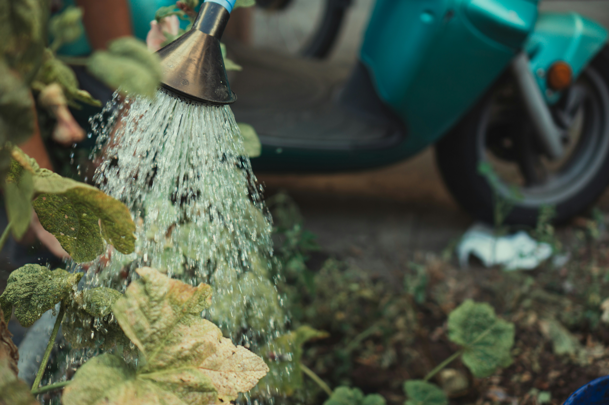

Watering 101: How Much is Too Much?

One of the most common mistakes in plant care is overwatering. More plants die from too much water than from too little. Understanding your plant's water needs is crucial for keeping them healthy.
Signs of Overwatering:
- Yellowing leaves, especially lower leaves
- Wilting despite moist soil
- Mushy or soft stems
- Fungus or mold on soil surface
- Root rot (black, mushy roots)
Proper Watering Techniques:
- Check soil moisture before watering - stick your finger 1-2 inches into the soil
- Water thoroughly until water drains from the bottom
- Allow soil to dry between waterings (depth depends on plant type)
- Adjust watering frequency based on season and humidity
- Use room temperature water when possible
General Rule: Most houseplants prefer to dry out slightly between waterings, while outdoor plants may need daily watering during hot summer months.